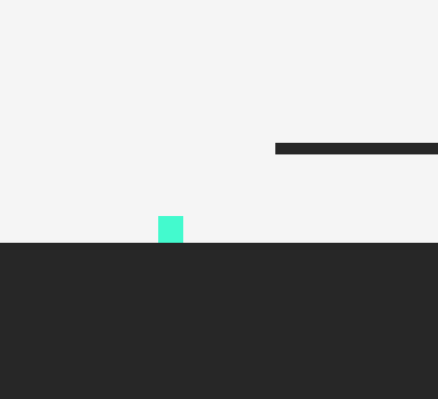
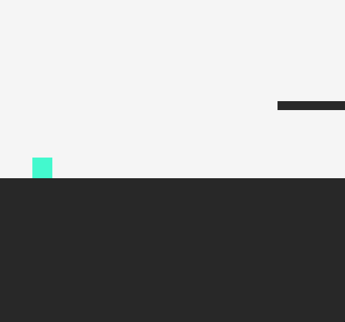
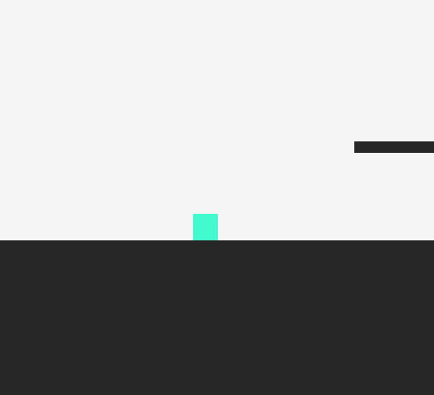
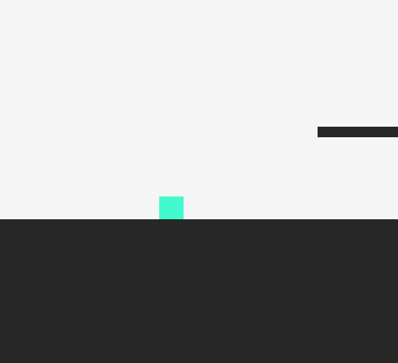
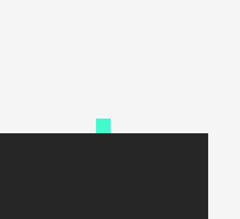
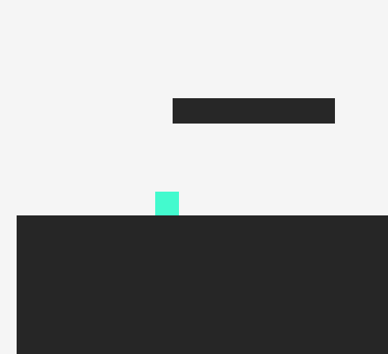
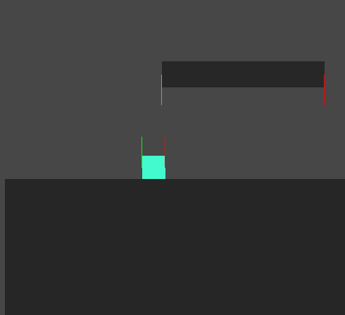
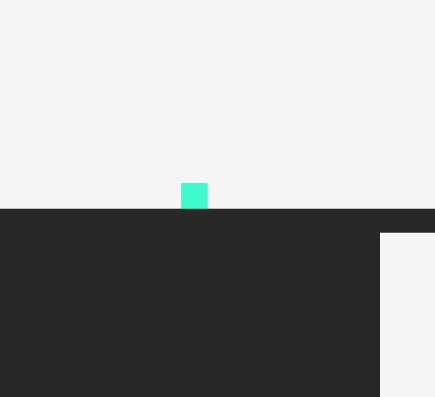

Here are some tips to make your 2D platformer feel good.
Let's start from scratch
We have a square that moves left and right at a constant velocity and jumps to a constant height.

Fixing the basic movement
First, let's change the movement script so the character accelerates up to a max speed and decelerates when stopping.
You can tweak these values (acceleration, deceleration, top speed) to get different feels. For example, if deceleration is too slow, it feels like the character is on ice.

Next up is fixing the jump
Jumping is the core mechanic of every platformer, and every game's jump is different.
But the basic variables are:
jump height and jump duration (hang time)
These are controlled by the jump velocity and gravity, plus a fall multiplier. The fall multiplier increases the player's gravity by that amount while falling.
We also want a variable jump, so the jump height depends on how long the button is held.

Now that the basic controller is done, we can work more on the jump.
Jump input buffering
If the player presses jump just before landing, the character lands and does nothing. That feels like the game's fault and makes the controls feel unresponsive. The fix is to give the player a few grace frames before landing: if they press jump during those frames, the character jumps as soon as it lands.

Coyote time / ledge forgiveness
This one makes a huge difference and makes jumping between platforms much smoother. We give the player a few grace frames after walking off a platform, during which they can still jump.
These two tricks can make a game feel much better, but it's also important not to go overboard and baby the player. Find the right balance for your platformer.

Corner correction
It's pretty annoying when the player tries to jump over a block, clips the corner, and falls. To fix this, we nudge the player past the corner.

Corner correction gave me the most trouble. I struggled to find a good way to implement it in Unity.
I ended up using raycasts from the player and the platform to find how much of the corner the player is hitting, then moving the player by that amount. There are probably better ways to do this, but it works, so I'm happy.

There's a lot more you can do depending on your game's mechanics, like the dash in Celeste. But I wanted to test my new and improved character controller, so I made a test level and filled it with:
- Ladders.
- Soft platforms.
- Moving platforms.
- One-way platforms.
- Bouncy platforms.
Then I just jumped around.

It was surprisingly fun!
It's cool how fun it was without any story or specific mechanics.
The project, with the basics above implemented, is on GitHub.